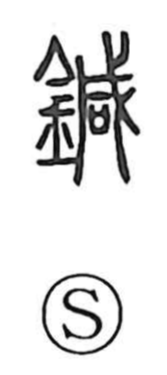

針

Uncategorized
Kun: hari | On: shin
needle ・ pin
Explanation
Shirakawa explains that the earliest form of this word was written 鍼, with 咸 as the phonetic element that gives the on reading shin; the same phonetic appears in 箴. The graph 針 later developed as the simpler form. In ancient writing the figure shows a needle as a straight stroke with a prominent dot marking the tiny hole—the eye—through which thread passes, a depiction that eventually settled into the standardized character. The Shuowen glosses it as a sewing implement, hence the core sense “sewing needle.” A curved implement is written 鉤 for a fishhook, reserving 鍼 and 箴 for medical needles; from that medical context these graphs also came to be used figuratively for “to admonish” and “admonition.”